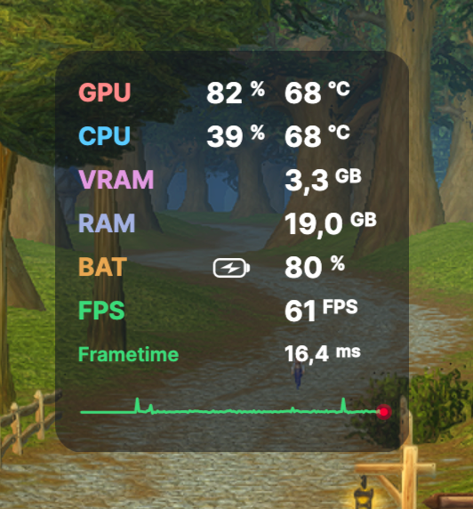

Track your FPS, frametime sparklines, GPU/CPU thermals, and battery in real time — with virtually zero overhead.
Latest version: v0.9.1 • Requires macOS 13+ (Ventura, Sonoma, Sequoia) • Free & Open Source (MIT)

Freely draggable anywhere or snap to any corner
Visualize gameplay smoothness in real time with a low-latency sparkline and instant micro-stutter detection.
The HUD appears seamlessly as soon as any 3D or Metal game launches, and fades away quietly when you return to your desktop.
Track live chip utilization, unified VRAM & RAM consumption, battery stats, and thermal throttling in real time.
Freely drag and drop the overlay anywhere on your screen with your mouse, or snap it instantly to any of the 4 screen corners to stay out of your mini-map.
Automatic background check, download, and instant restart directly within the app. Zero manual DMG downloads needed.
Zero telemetry, no trackers, no ads, no cloud logins. Clean, lightweight codebase fully open-source and auditable under the MIT license.
Click Download to get the latest pre-compiled build tailored for Apple Silicon.
Open the disk image and drag the CherryHud icon straight into your Applications folder.
Start CherryHud: it stays quietly in your menu bar and awakens automatically when your game starts.